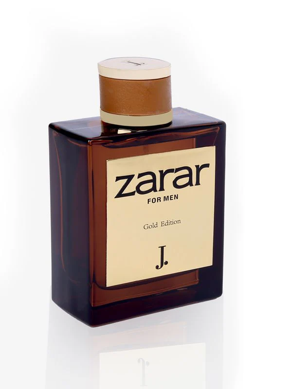

Zarar
Zarar is not just a fragrance; it’s a statement. Intense, bold, and magnetic, this perfume is crafted for the fearless spirit. It opens with spicy top notes of black pepper and cardamom, leading to a smoky heart of leather and dark woods. Base notes of patchouli and vetiver ground the scent in a mysterious, earthy depth. Zarar is the perfect companion for daring adventures and those who thrive on standing out from the crowd.
Zarar
- Inspiration: Zarar is inspired by the fearless spirit and bold personalities. The goal was to create a fragrance that commands attention.
- Ingredient Selection: Key ingredients such as black pepper, cardamom, leather, and dark woods were carefully chosen to create a powerful, bold scent.
- Fragrance Formulation: Expert perfumers crafted a perfect balance of spicy, smoky, and earthy notes to evoke a deep, unforgettable aroma.
- Bottle and Packaging Design: A striking and modern bottle design was created to reflect the bold and daring essence of Zarar.
- Quality Assurance: The fragrance underwent thorough testing to ensure its intensity, longevity, and uniqueness meet the highest standards.
- Launch and Delivery: Zarar was launched with a bold marketing campaign targeting those who thrive on making a statement.